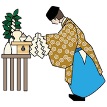

認知科学会 オーガナイズド・セッション
過剰に意味を創り出す認知：ホモ・クオリタスとしての人間理解へ向けて

日本認知科学会第34回大会にて 「過剰に意味を創り出す認知：ホモ・クオリタスとしての人間理解へ向けて」 というタイトルのオーガナイズド・セッションを企画しています。
現在、講演発表を募集中です。認知科学に隣接するさまざまな分野からの応募も大歓迎です。関連するネタをお持ちの方は、奮ってご応募ください。
※ 発表申込締切 2017年 4 月 3 日 (月)
- 日時: 2017年9月13日 (水)〜9月15日（金）
- 場所: 金沢大学角間キャンパス
- ウェブサイト： http://www.jcss.gr.jp/meetings/jcss2017/
概要
人が認識する世界は「意味」に満ちている。これらの「意味」は世界の姿を正しい映し出したものなのだろうか。「意味」はどこから現れるのだろうか。よく観察してみると、人の認知には「過剰に意味を創り出す」という性質が備わっているようである。
例を挙げよう。「∵」 を顔として認識する（パレイドリア）。幾何学図形の動きから意図やアニマシーを見出す（アニマシー知覚）。自分自身のいい加減な意思決定に合理的な説明を与えてしまう（認知バイアスや選択盲）。ゴムの手を自分の身体として錯覚する（ラバーバンド錯覚）。外界の変化が自分自身の動きに帰属すると感じる（動作主体感）。これらはいずれも認知心理学の分野で広く知られた現象である。過剰に意味を創り出す例はさらに、思考や推論にまで広く見られる。枯れすすきは幽霊となって現れる。虫の知らせや験担ぎでは、無関係な事象の間に超自然的な因果を認識する。天変地異には神々の、流行病には悪霊の力を感じることもある。
このように人はノイズをノイズのまま、偶然を偶然のまま無意味なものとして認識するのではなく、ノイズに有意味なパターンを知覚し、偶然の事象に因果を認識する。これは文化や社会の成熟、そして人類知性の進化にどう貢献したのだろうか。果たして動物は、未来のAIは、過剰な意味を創り出し認識するのだろうか。本セッションは、知覚から思考、推論に至るまでこれまではバラバラに捉えられてきたさまざまな現象を、「過剰に意味を創り出す」という一貫した枠組みの中で理解しようという試みである。そしてこの人間観を「ホモ・クオリタス」と呼び、認知の基本的な原理として位置づけることを提案したい。
キーワード
意味・質感・芸術・（知覚・認知・身体の）錯覚・創造力・想像力・空想・感情や情動・人工物の擬人化・意図推定・遊び・超自然的な力の認知・間（ま）の感覚・クオリアなど。
講演者(予定)
- 高橋 康介 (中京大学): イントロダクション
- 小川 奈美 (東京大学):「多感覚を統合したがる自己：なぜ身体所有感を感じてしまうのか」
- 西尾 慶之 (東北大学):「現実感が道理をしのぐ時：神経疾患患者の幻覚体験にそなわる現実感」
- 友野 貴之 (早稲田大学):「間隙をつくる障害物の“人らしさ”は，通り抜け行為に影響を与えるか？−間隙の通過可否判断研究からの一考察」
- 米満 文哉 (九州大学):「新たな減価効果—顔の多重重複は不気味さを生む—」
- 日高 昇平 (JAIST):「特徴の統合によるオブジェクト構成の計算論に向けて」
- 総合ディスカッション
関連コンテンツ
企画・司会
- 高橋 康介（中京大学）
- 日高 昇平（北陸先端科学技術大学院大学）